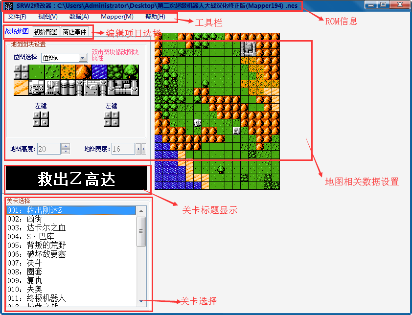

主界面功能区域布局：

主界面信息一共分为6个板块：
1.ROM信息：用修改器加载打开相应的ROM（机战原版或者任何的改版文件）之后就会显示相应的ROM名称。
2.工具栏：工具栏一共为5个项目，分别为文件、视图、数据、MAPPER、帮助
2.1文件：打开（打开所需要修改的ROM文件，即我们所需要操作的对象），保存（保存所修改的数据【数据库中所有已修改的数据只有在这里点保存才能生效】），退出（关闭修改器）。
2.2视图：选择自己所需要的修改器皮肤。
2.3数据：数据包含数据库、文字库、剧情事件、武器动画以及其他项目，具体说明请查看子项。
2.4MAPPER：供修改者一键转换ROM的mapper值（194或者74）
2.5帮助：帮助为本修改器的使用说明和关于机战的相关资料，关于为修改器作者和修改器的相关信息。
3.编辑项目选择：选择战场地图、初始配置或者地图事件的修改，具体说明查看子项。
4.地图相关数据设置：此版块为地图数据的编辑，包含地图模型、地图模块数据的设置，具体请查看子项。
5.关卡标题显示：各个关卡的标题显示（为真正的标题数据）
6.关卡选择：选择各个关卡进行编辑（显示的标题为加载的文本中的文本信息，标题信息请参考关卡标题显示）